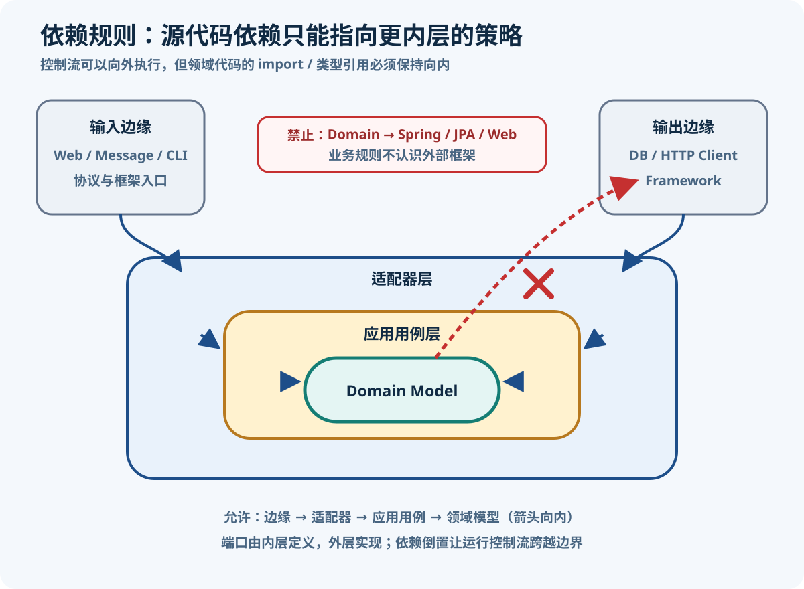
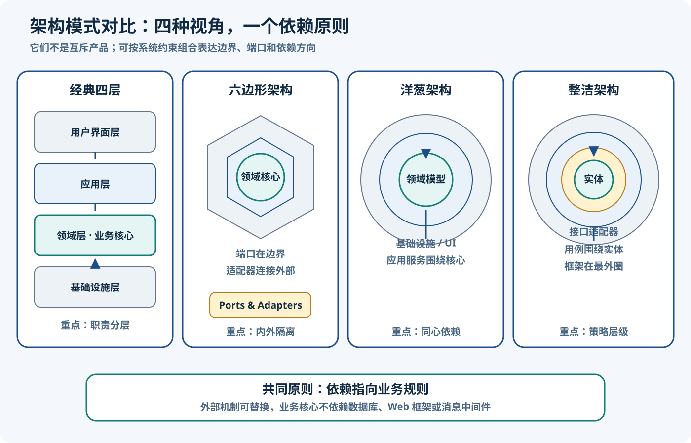

DDD 分层架构模式对比
整理日期：2026-08-11；资料检索日期：2026-08-11
比较的不是五套互斥产品，而是五种组织职责、保护业务规则和管理技术依赖的视角。
核心结论
- DDD 没有规定唯一必选架构。Eric Evans 的 DDD Reference 收录经典分层架构，同时明确其关键目标是隔离领域表达，并指出六边形等模式同样可以实现这一目标。因此“做 DDD”不等于必须套某一种图。
- 经典四层、六边形、洋葱与整洁架构的形状和术语不同，却都倾向于让稳定的业务规则免受可替换数据库、Web 框架和消息设施支配。
- 传统三层对简单 CRUD、内部管理工具和稳定流程可能已经足够；当复杂不变量散落在 SQL、Controller 或框架回调中时，它才暴露出模型难演进和测试依赖基础设施的问题。
- 架构质量不由层数、圆圈数或目录数衡量。更有意义的问题是：源码依赖指向谁、模型能否独立表达和测试、边界是否对应真实变化原因。
来源定义：Eric Evans / Domain Language 的 DDD Reference是原著模式摘要的官方入口；其参考手册 PDF把 Layered Architecture 的目标归结为隔离领域模型，也认可其他能保持这种隔离的架构。本文判断：DDD 关注模型与边界，下面五种结构是实现选择，不是 DDD 成熟度等级。
先看共同问题：让 Order 依赖什么
想象一个订单提交规则：“草稿订单至少有一行才能提交，提交后不能再改数量。”最危险的写法不是包名少，而是 Order 为了完成规则直接依赖 JPA 实体生命周期、Spring 事务、HTTP 请求或消息 SDK：Order → JPA / Spring / Web。此时改变数据库映射或接口协议，可能迫使业务核心一起修改。
更稳健的拆分是：领域模型决定订单是否合法；应用用例协调加载、调用、事务和保存；输入/输出适配器翻译 HTTP、CLI、消息、JPA 与外部 API。这样规则仍是普通 Java，技术变化停在边缘。

图的文字等价说明是：输入边缘依次依赖输入适配器、应用用例和领域模型；输出适配器实现由内层拥有的所需能力接口，因此编译期仍是“外层实现 → 内层接口”。运行时由用例编排形成两条调用：HTTP Adapter → Use Case → Order执行领域决策，Use Case → OrderRepository Port → JPA Adapter完成持久化；不是 Order 调用仓储。控制流确实可以从内层用例对象流向外层适配器对象。二者并不矛盾：Java 的多态和依赖倒置使运行控制流可以向外，而源码依赖仍指向内层拥有的抽象。Robert C. Martin 的整洁架构原文正用 output port 解释这种边界穿越。
图示限制：圆环只是便于教学的简化，不表示所有系统必须有三圈，也不表示领域模型会逐层发起每次调用。依赖倒置也不等于“每个方法都造接口”；只有跨边界、存在替换/测试/政策所有权价值的目的性契约，才值得成为端口。
传统三层：Presentation–Business–Data
传统三层把系统分为表现层、业务层和数据访问层，常见调用方向是 Presentation → Business → Data。表现层处理协议和展示，业务层执行校验与流程，数据层访问数据库或远端数据源。Martin Fowler 的 Presentation–Domain–Data Layering指出，这种分离能缩小每次思考范围、复用业务逻辑并提供测试接缝。
| 方面 | 说明 |
|---|---|
| 优势 | 概念直观、团队熟悉、CRUD 数据流短；对小型后台、报表和稳定流程，开发与排障成本低。 |
| 常见代价 | 业务层通常直接依赖 Data 层；技术类型容易沿调用链上泄，横向层变大后一次功能变更可能跨越所有层。 |
| 适用 | 业务规则少、以数据维护为主、外部集成少、生命周期短或变化可预测的系统。 |
| 失效信号 | 同一不变量分散在 Controller、Service、SQL/触发器；没有数据库就无法测试关键决策；业务类被 ORM 生命周期牵制。 |
不要把“层”与“部署层级”混为一谈。Layer 是源码中的逻辑职责，Tier 是进程、服务器或网络上的物理部署。三层代码完全可以部署在一个 JVM；也可跨多个物理层。Fowler 明确区分两者，Microsoft Learn 的常见 Web 架构官方指南也给出相同区分。
Transaction Script 不是天然错误。一个 OrderBusinessService按用例读取数据、校验并更新，若规则简单、短小且稳定，就是诚实而低成本的设计。问题出现在规则复杂且持续变化时：服务方法越来越长、状态转换可被任意路径绕过，业务语言无法落在一个自治模型中。此时应提升领域模型，而不是因为类名叫 Service 就判错。
经典四层：UI、Application、Domain、Infrastructure
Evans 的经典分层将业务层进一步区分为应用层与领域层：
- User Interface：展示信息、解释用户命令或外部消息，不决定领域规则。
- Application：定义软件可执行的用例，协调领域对象、授权、事务边界和对外协作；保持薄意味着不吞掉领域知识，不意味着每个方法都只能机械转发一行。
- Domain：表达业务概念、状态、规则和不变量，是模型自治的核心。
- Infrastructure：提供持久化、消息、时钟、邮件、外部服务等技术实现，也可承载支持上层的通用机制。
应用服务可以包含重要的用例编排：幂等检查、事务起止、调用多个领域对象、保存聚合和把领域事件交给发布机制；它不应复制“订单何时允许提交”这类领域决策。Microsoft Learn 的DDD-oriented microservice 指南展示了应用层、领域层与基础设施层的工程实现，但这是 .NET 微服务语境下的实现指导，不是 DDD 的唯一定义，也不意味着 Java 项目必须照搬项目拆分。
基础设施依赖的细节：若 Domain/Application 直接 import 某个 JPA Repository 实现，依赖仍向外。更稳妥的做法是让需要能力的内层拥有接口，基础设施实现它。仓储端口可以由 Domain 拥有（当它表达聚合集合语义），也可以由 Application 拥有（当它只服务某个用例的读取/保存需求）；接口所有权由模型责任和依赖方向决定，不存在“所有接口一律放 domain”的普遍规则。实现始终留在外层。
六边形架构：Ports & Adapters
Alistair Cockburn 的原始模式把应用放在里面、外部设备放在外面。Port 是一次有目的的会话/能力边界，同一端口可接多个技术 Adapter。其目标是让应用既可被用户、自动化测试、批处理或其他程序驱动，也可在不连接最终数据库时开发和回归测试。详见2005 年 Hexagonal Architecture 原文。
| 一侧 | 谁发起 | 订单例子 | 可替换测试替身 |
|---|---|---|---|
| Driving（驱动） | 外部参与者调用应用 | HTTP Controller、CLI、消息消费者、定时任务 → CreateOrderUseCase | 用例级测试驱动器 |
| Driven（被驱动） | 应用需要外部能力 | OrderRepository → JPA/SQL，或支付端口 → HTTP Client | 内存仓储、Fake Gateway |
Cockburn 原文先使用 application-controlling/data-retrieval，又把两类实现称为 primary/secondary ports and adapters，并明确说明也可叫 driving/driven adapters。因此本文使用 Driving/Driven 有原文依据，但不把这些称呼扩大成每个团队都必须采用的包名。无论怎样命名，端口应按目的设计，例如“创建订单”或“保存订单聚合”，而不是为每个类机械复制一个接口。
六边形不是六层。六边形只是为多个端口留出画图空间，数字六没有架构含义。原文中的 application 指整个内部应用，可包含业务核心；它不能机械映射为 DDD 工程里的 application package。六边形首先回答“内外如何交互”，内部仍可采用领域层与应用层。
洋葱与整洁架构：共同向内，但不是同一套词
洋葱架构
Jeffrey Palermo 在Onion Architecture 原始系列第一篇提出：领域模型位于中心，代码只可依赖更中心的层，基础设施被外置。其第二篇进一步把 Domain Model 置于中心，并在外圈组织领域/应用服务与接口。对 Java 项目可理解为：实体和值对象不认识 Spring/JPA；用例服务围绕领域工作；Web、持久化和消息在外圈实现内层契约。
Palermo 明确把这种结构定位于复杂行为和长寿命业务应用，并认为小网站未必值得付出成本。因此洋葱不是“比四层更高级”，而是用同心方向更强地控制耦合。
整洁架构
Robert C. Martin 的 Clean Architecture 区分 Entities、Use Cases、Interface Adapters、Frameworks & Drivers。其核心 Dependency Rule 是：跨圆环的源码依赖只能向内，外圈名称与框架数据格式不能渗入内圈。Controller 可以调用 Use Case，Use Case 也能在运行时经 output port 调用 Presenter/Repository 实现，但 Java 接口放在内侧，由外侧实现。
跨边界数据应使用内层方便的简单数据结构或专用 DTO；不要把 HTTP Request、JPA Entity、数据库 Row 或框架生成类型传进 Use Case/Entity。最外层出现 @RestController、@Repository、@Entity并没有问题，目标不是“零框架代码”，而是让框架代码停在可替换边缘。
共同点、差异与图示边界

图的文字等价说明是：经典四层以 UI/Application/Domain/Infrastructure 分配职责；六边形以应用内外、端口和适配器组织交互；洋葱把 Domain Model 放在中心并让耦合向内；整洁架构按 Entity、Use Case、Interface Adapter、Framework/Driver 的政策层级向内依赖。它们可以组合：一个限界上下文内部采用领域/应用分层，同时用输入输出端口隔离边缘。
图示限制：图只画了四种 DDD 友好模式，没有把传统三层画成第五栏；圆环和层块是概念示意，不能据此认定术语一一相等，也不能认为每个请求必须逐圈经过。Onion 强调以 Domain Model 为中心的对象与耦合，Clean 给出 Entities/Use Cases 等政策层级和明确的边界数据规则；二者共享向内依赖思想，但不是同一架构，更都不是 DDD 本身。
统一比较矩阵
| 架构 | 核心隐喻 / 首要问题 | 业务规则位置 | 编译期依赖方向 | 输入 / 输出边界 | 数据库 / 框架位置 | 测试含义 | 主要收益 | 成本 / 风险 | 适合复杂度 / 情境 | 常见误用 |
|---|---|---|---|---|---|---|---|---|---|---|
| 传统三层 | 上下堆叠；展示、业务、数据怎样分工？ | Business Layer，可为 Transaction Script 或 Domain Model | 通常 Presentation → Business → Data | UI 在上，Data 在下；常无显式端口 | Data 层；框架可能贯穿各层 | 可分层测，但业务测试常需替换 Data | 简单、熟悉、交付快 | 业务对数据层的直接耦合可能累积；横向层膨胀 | 简单 CRUD、稳定流程、小团队 | 把逻辑层/物理 tier 混同；任何规模都按技术层顶级分包 |
| 经典四层 | 职责分层；用例编排与领域决策如何分开？ | Domain；Application 协调用例 | 概念上向 Domain；技术实现通过内层接口倒置 | UI 进入 Application；Infrastructure 提供技术能力 | Infrastructure；UI 框架在 UI | 领域可脱离 UI/DB 测，用例可用替身测 | 显式保护领域模型与用例职责 | 团队可能争论接口归属或做贫血领域 | 规则中等到复杂、需要清晰事务/用例边界 | 把 Application 误做空壳；或让 Domain 直接依赖 Infrastructure |
| 六边形 | 内外与插座；谁驱动应用、应用驱动谁？ | 内部 application/business core | Adapter → core-owned Port；核心不依赖设备 | 按目的定义 driving/driven ports | 外部设备，由 Adapter 翻译 | 可用测试适配器驱动，用内存实现替代数据库 | 多入口、多外部系统替换与隔离清晰 | 端口过度设计、映射代码增加 | 集成较多、协议变化、要求隔离测试 | 把六边形理解为六层；每个类配一个接口 |
| 洋葱 | 同心圆；怎样让耦合指向 Domain Model？ | 中心 Domain Model；应用服务在外围环 | 外圈 → 更内圈 | 接口向内归属，UI/Infrastructure 在外 | 最外圈 | 中心可独立测试，外圈做集成测试 | 长期控制技术耦合，突出模型中心 | 对小系统可能仪式过重；环定义会因团队而异 | 长寿命、复杂行为的业务应用 | 只画圆圈却保留反向 import；把所有接口堆进中心 |
| 整洁 | 政策层级；高层规则怎样不认识低层机制？ | Entities 与 Use Cases | 跨边界源码依赖只向内 | Controller/Presenter/Gateway 经边界模型和接口转换 | Frameworks & Drivers 最外层 | 用例/实体无需 Web、DB，边界另做契约与集成测试 | 依赖规则和边界数据约束最显式 | DTO/Mapper 与项目拆分成本；可能机械套四圈 | 长寿命核心、严格替换性/合规/测试要求 | 把运行调用当依赖箭头；强制正好四圈 |
矩阵没有分数和冠军，因为适用性取决于业务复杂度、变化与寿命。Fowler 还提醒：当系统变大时，顶层按 presentation/domain/data 横切会失去聚合力，应优先按业务域模块化，再在模块内部合理分层。
术语映射：相近不等于相同
| DDD / 分层概念 | 在其他图中的近似对应 | 为什么只是近似 |
|---|---|---|
| Domain Layer / Domain Model | Onion 中心；Clean 的核心 Entity/业务规则；Hexagonal 内部的一部分 | Clean 的 Entity 指企业级规则，DDD Entity 主要按身份定义；语义范围不完全相同。 |
| Application Layer | Use Case / Application Service 环 | Cockburn 原文的 application 可包含整个业务核心，不等于 DDD application package。 |
| Port | 核心拥有的输入契约或所需能力接口 | Port 表达目的性会话，不是“任意 Java interface”的同义词。 |
| Adapter | 边缘的 Controller、Presenter、Mapper、Repository/Gateway 实现 | 职责是协议与模型翻译；只有加上 Adapter 后缀并不会自动形成边界。 |
| Infrastructure | Onion 外圈；Clean Frameworks & Drivers；Hexagonal 外部设备及适配器实现 | 不同模式对 Adapter 与框架是否拆圈、基础设施包含什么的划分不同。 |
这些映射用于帮助 Java 开发者读图，不能用于机械改包名。DDD、Hexagonal、Onion、Clean、CQRS 与微服务也不是同义词或强制组合：一个简单微服务可以用三层 CRUD；一个模块化单体也可以在复杂上下文中采用 DDD 与端口适配器；CQRS 是否引入取决于读写模型差异，不由圆圈决定。
Java 21 目录与依赖示例
结构一：小限界上下文按层组织
com.example.order
├── ui
│ └── HttpCreateOrderController.java
├── application
│ ├── CreateOrderUseCase.java
│ └── CreateOrderService.java
├── domain
│ ├── Order.java
│ └── OrderRepository.java
└── infrastructure
└── JpaOrderRepository.java这种结构对单一且较小的上下文容易理解。依赖约束应由 module/test/ArchUnit 等机制守住：domain不依赖其他三层，application依赖领域，UI 与 Infrastructure 依赖内层契约。若顶层各层持续膨胀，应转向按业务特性切分。
结构二：Feature / Context First
com.example.sales
└── order
├── domain
│ └── Order.java
├── application
│ ├── CreateOrderUseCase.java
│ └── OrderRepository.java
└── adapter
├── in
│ └── HttpCreateOrderAdapter.java
└── out
└── JpaOrderRepositoryAdapter.java业务模块先聚合变化，再在模块内分 domain/application/adapter。它更适合模块化单体或多上下文工程，避免“所有 Controller 一个巨包、所有 Repository 一个巨包”。这里把 OrderRepository放 Application，是因为示例把“保存本用例产生的 Order”视为用例所需能力；若仓储表达聚合的集合语义并服务多个领域协作者，放 Domain 也合理。所有接口的位置都由谁拥有语义、谁需要能力、源码依赖指向哪里决定。
可编译的端口与适配器示例
下面是一个完整、仅依赖 JDK 的 Java 21 文件。为了能单文件编译并聚焦依赖方向，HttpRequest/HttpResponse和 JpaRowStore是边缘技术的最小替身，不声称实现真实 HTTP/JPA；生产代码可在同样的两个 Adapter 类中换成 Spring MVC 与 Jakarta Persistence。核心的 Order、CreateOrderUseCase、OrderRepository签名始终没有 Spring、JPA 或 Web 类型。
import java.util.LinkedHashMap;
import java.util.Map;
import java.util.Objects;
import java.util.UUID;
public final class ArchitectureExample {
// domain：只表达订单身份与创建规则。
public record OrderId(UUID value) {
public OrderId {
Objects.requireNonNull(value, "value");
}
}
public static final class Order {
private final OrderId id;
private final String customerId;
private Order(OrderId id, String customerId) {
this.id = Objects.requireNonNull(id, "id");
if (customerId == null || customerId.isBlank()) {
throw new IllegalArgumentException("customerId 不能为空");
}
this.customerId = customerId;
}
public static Order create(OrderId id, String customerId) {
return new Order(id, customerId);
}
public OrderId id() { return id; }
public String customerId() { return customerId; }
}
// application：输入端口与命令/结果由核心拥有。
public record CreateOrderCommand(String customerId) {}
public record CreateOrderResult(String orderId) {}
public interface CreateOrderUseCase {
CreateOrderResult create(CreateOrderCommand command);
}
// application：用例需要的输出端口；实现位于外层。
public interface OrderRepository {
void save(Order order);
}
public static final class CreateOrderService implements CreateOrderUseCase {
private final OrderRepository orders;
public CreateOrderService(OrderRepository orders) {
this.orders = Objects.requireNonNull(orders, "orders");
}
@Override
public CreateOrderResult create(CreateOrderCommand command) {
Objects.requireNonNull(command, "command");
var order = Order.create(new OrderId(UUID.randomUUID()), command.customerId());
orders.save(order);
return new CreateOrderResult(order.id().value().toString());
}
}
// adapter/in：HTTP 形状只停留在输入边缘。
public record HttpRequest(String customerId) {}
public record HttpResponse(int status, String body) {}
public static final class HttpCreateOrderAdapter {
private final CreateOrderUseCase useCase;
public HttpCreateOrderAdapter(CreateOrderUseCase useCase) {
this.useCase = Objects.requireNonNull(useCase, "useCase");
}
public HttpResponse post(HttpRequest request) {
var result = useCase.create(new CreateOrderCommand(request.customerId()));
return new HttpResponse(201, result.orderId());
}
}
// adapter/out：行模型与存储 API 都留在持久化边缘。
public record OrderRow(String id, String customerId) {}
@FunctionalInterface
public interface JpaRowStore {
void persist(OrderRow row);
}
public static final class JpaOrderRepositoryAdapter implements OrderRepository {
private final JpaRowStore rowStore;
public JpaOrderRepositoryAdapter(JpaRowStore rowStore) {
this.rowStore = Objects.requireNonNull(rowStore, "rowStore");
}
@Override
public void save(Order order) {
rowStore.persist(new OrderRow(
order.id().value().toString(),
order.customerId()));
}
}
public static void main(String[] args) {
Map<String, OrderRow> table = new LinkedHashMap<>();
OrderRepository repository = new JpaOrderRepositoryAdapter(
row -> table.put(row.id(), row));
CreateOrderUseCase useCase = new CreateOrderService(repository);
var http = new HttpCreateOrderAdapter(useCase);
var response = http.post(new HttpRequest("customer-42"));
if (response.status() != 201 || !table.containsKey(response.body())) {
throw new AssertionError("订单应经输出端口保存");
}
System.out.println("created=" + response.body());
}
}源码依赖是：HttpCreateOrderAdapter → CreateOrderUseCase，CreateOrderService → Order + OrderRepository，JpaOrderRepositoryAdapter → OrderRepository + Order。运行时保存调用从 Service 流向 JPA Adapter，但 Service 只认识自己拥有的 OrderRepository接口。真实 Spring/JPA 注解可放外层适配器；追求的不是消灭框架，而是阻止框架所拥有的类型进入内层边界。
选择建议：从需要保护的变化出发
| 场景 | 复杂度与变化信号 | 推荐起点 | 保留的边界 |
|---|---|---|---|
| CRUD / 内部管理工具 | 规则少、外部系统少、小团队、寿命短或流程稳定 | 传统三层或 feature-first 的简单分层 | 至少隔离 Web 与数据访问；不要提前制造大量端口 |
| 复杂模块化单体 | 不变量多、业务频繁变化、多团队共享单体 | 按限界上下文/特性优先，内部经典四层或 Onion | 模块 API、领域自治、用例事务边界 |
| 集成密集的限界上下文 | 多入口、多数据库/外部 API/消息，协议常变 | Hexagonal Ports & Adapters | 每个目的性会话有稳定 Port，边缘承担翻译与失败处理 |
| 长寿命或受监管核心 | 规则复杂、技术生命周期长、审计与隔离测试要求高 | Onion 或 Clean，并显式模块化 | 向内依赖、边界数据、框架隔离、架构测试 |
| 领域简单的微服务 | 部署独立但业务只是 CRUD，团队规模有限 | 简单三层/单层加清晰模块，不强上富模型 | API 契约、数据所有权、可观测性；微服务不自动需要 DDD |
决策顺序：先问业务规则复杂度和变化频率；再问外部系统数量与替换频率；再问关键规则是否必须脱离数据库做隔离测试；最后结合团队规模、技术寿命和合规要求决定边界强度。规则简单且稳定时保持三层；规则复杂时显式 Domain/Application；入口与外设变多时引入 Port/Adapter；长期核心才值得强化同心依赖和边界模型。
YAGNI 与演进：选择能守住当前必要边界的最小结构。可以先把 HTTP 映射与 SQL 移出业务方法，再抽出一个真正需要替换的 Repository Port，随后按变化热点拆特性模块；不必一天内把整个遗留系统改成四圈。Microsoft Learn 的多架构微服务设计指南也强调不同服务可以按自身需要混合简单 CRUD 与更高级 DDD 模式；这是工程建议，不是 DDD 定义。
练习与验收：订单服务依赖审计
输入清单：OrderController → OrderService；OrderService → OrderJpaEntity；Order → JpaRepository；Order → TransactionTemplate；KafkaOrderListener → OrderService；OrderService → PaymentHttpClient；JpaOrderRepositoryAdapter → OrderRepository。
- 逐个分类为 Domain、Use Case、Driving Adapter、Driven Adapter 或 Framework Detail；先按责任而非现有包名。
- 圈出进入核心的框架类型：
OrderJpaEntity、JpaRepository、TransactionTemplate、HTTP Client 请求/响应。 - 为“创建/提交订单”定义输入端口，为“保存订单”和“发起支付”定义目的性输出端口；不要给每个类都配接口。
- 把 HTTP/Kafka 请求映射为用例命令，把 Domain Order 映射为 JPA Entity，把支付结果映射为核心认可的结果类型。
- 用编译依赖或架构测试验证 Domain 不引用 adapter/framework，Application 只依赖 Domain 与自身端口。
期望修正箭头：OrderController / KafkaOrderListener → SubmitOrderUseCase → Order；SubmitOrderService → OrderRepository / PaymentPort（内层接口）；JpaOrderRepositoryAdapter → OrderRepository；PaymentHttpAdapter → PaymentPort。运行时 Service 可以调用后两个适配器对象，编译时适配器依赖内层接口。事务可由应用层边界或外层拦截器实现，但 Order不认识 TransactionTemplate。
自检：核心能否只用 JDK 编译并测试？端口是否对应明确用例/能力，而非重复每个类？Repository 接口所有权是否有责任理由？JPA/HTTP 类型是否在 Adapter 完成转换？有没有把运行时调用箭头误画成源码依赖？是否仍为简单读取保留了不必领域化的路径？全部说清楚后，再讨论包名和框架注解。
本篇小结
传统三层以低成本分离展示、业务与数据；经典四层把用例编排和领域决策分开；六边形围绕目的性 Port 管理内外；洋葱以 Domain Model 为中心控制耦合；整洁架构把政策层级、源码依赖和边界数据规则说得最明确。它们不是互斥标签，更不是 DDD、CQRS 或微服务的同义词。真正要守住的是：业务规则有自治模型，源码依赖指向拥有政策与契约的一侧，框架细节留在边缘，并以当前复杂度能承受的最小结构持续演进。
参考资料
资料检索于 2026-08-11。以下均为作者原站或官方技术资料；正文为自行归纳，Microsoft Learn 条目标为工程实现指导而非 DDD 定义。
- Eric Evans / Domain Language：DDD Reference — DDD 原著模式摘要的官方入口。
- Eric Evans：Domain-Driven Design Reference（PDF） — Layered Architecture、Application/Domain/Infrastructure 职责与领域隔离。
- Alistair Cockburn：Hexagonal Architecture（2005 原文） — Port、Adapter、内外边界、驱动者和可替换测试设备。
- Jeffrey Palermo：The Onion Architecture, Part 1 — 向中心耦合、外置基础设施和适用语境。
- Jeffrey Palermo：The Onion Architecture, Part 2 — Domain Model 中心及外环职责。
- Robert C. Martin：The Clean Architecture — 四类区域、Dependency Rule、边界穿越与数据结构。
- Martin Fowler：Presentation Domain Data Layering — 三层职责、依赖、测试、逻辑 layer 与物理 tier。
- Martin Fowler：Patterns of Enterprise Application Architecture Catalog — Transaction Script、Domain Model、Service Layer、Repository 等原始模式索引。
- Microsoft Learn：Common web application architectures — N-Layer 与 Clean Architecture 的官方工程指导。
- Microsoft Learn：Designing a DDD-oriented microservice — Application/Domain/Infrastructure 的实现示例与依赖说明。
- Microsoft Learn：Design the infrastructure persistence layer — 仓储接口与基础设施实现、隔离测试的工程指导。
DDD 七篇专题导航
- DDD 架构总览与学习路线
- DDD 基础概念与统一语言
- DDD 战略设计与限界上下文
- DDD 战术设计与领域模型
- DDD 分层架构模式对比（本篇）
- DDD 订单领域 Java 实践
- DDD 落地演进与常见误区